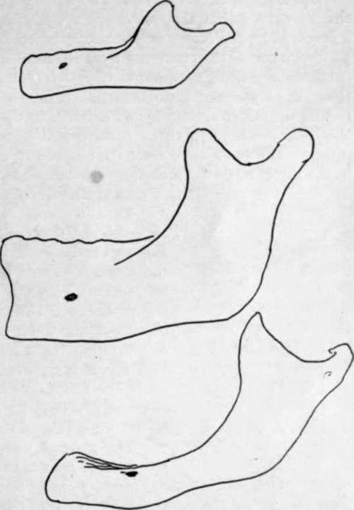
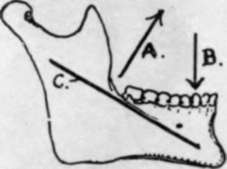

Lower Jaw Or Mandible. Part 4
Description
This section is from the book "The Anatomy Of The Human Skeleton", by J. Ernest Frazer. Also available from Amazon: The anatomy of the human skeleton.
Lower Jaw Or Mandible. Part 4
* The burden is thrown on this muscle only to show the movements of the joint; it must be understood that many other muscles are concerned.
Fig. 209.-Types of jaws from a child, an adult, and an old person. The higher position of the mental foramen in the child is owing to the imperfect development of the alveolar part of the jaw, and in the old bone to absorption of the alveolus following loss of teeth. Notice also the difference between the angles ; the angle becomes a necessity, as the mandible is depressed in consequence of the increasing height of the maxilla, for the purpose of keeping the margins of the two bones parallel, and hence the sharpest angle goes with the full dentition.
External Pterygoid. The hollow below the neck internally is separated from the long ligament by an interval in which lie, between the bone and ligament, from above down (Fig. 207), the auriculo-temporal nerve, origin of middle meningeal, internal maxillary and sometimes a process of parotid, the inferior dental artery, the inferior dental nerve. The mylo-hyoid nerve and vessels must pierce the ligament to reach the groove, for the ligament is fastened to the whole length of the margin of the foramen.
Looking at the bone as a whole, it is noticeable that its alveolar part is more sharply curved than the rest of the body, with the result that its hinder portion forms a bracket-like projection on the buccal aspect of the bone. The dental arcade forms a parabolic curve, thus differing from the semi-ellipse of the upper arcade. The result is reflected in the disposition of the teeth : the parabolic curve being narrower in front than the ellipse, and broader further back, the teeth in the lower jaw will tend to be behind the others anteriorly and external to them behind. So we find the direction of the lower front teeth to be upward and forward while the back teeth are directed upwards and inwards to meet their opposers, and the same tendency can be observed in the direction of the sockets. The comparative shortness of the jaw also has effect in causing the direction of the front teeth.
The inferior dental canal runs, inside the bone, between the splenial and alveolar portions. Openings exist for vessels and nerves between the canal and the dental sockets, and the mental foramen carries the mental vessels and nerve to the surface. This foramen is situated as a rule below the jugum between the two bicuspids, about half-way between the upper and lower margins of the body ; but this level is only true in the adult tooth-bearing jaw, for, as shown in Fig. 209, it is different at other periods of life. In the same figure the differences between the angles formed by the axes of ramus and body are apparent, and the probable explanation of the occurrence of the angle is given.
The general build of the bone is in accord with the principle of resistance to the forces tending to destroy its form. Thus, with powerful muscles acting on its ramus and lifting the long arm of the body against the upper jaw, it is evident that the tendency of such action would be to open out the angle between body and ramus, and we find a thick and strong bar thrown downwards and forwards to subtend the angle and render it secure (Fig. 210). Secondarily there is the thickening of the splenium, which resists the downward push of the alveolar teeth.
The mandible is composed of a thick outer shell of dense bone with a small amount of cancellous tissue contained within it, so that its body is cut with difficulty by bone forceps : it resists decay longer than other parts of the skeleton, which probably accounts for it being often found as the sole representative of the bones of the face or skull in specimens from strata of past geological periods. Such ancient jaws show that the presence of a mental prominence has been a human characteristic for ages, but the earliest known jaws-of the early Pleistocene or late Pliocene periods-do not possess the prominence. It is accounted for by assuming that a recession of the alveolar part has taken place in man at the same time that the splenial portion was comparatively well preserved, perhaps in connection with specialisation of the tongue and floor of the mouth in association with the function of speech.
The direction of the condyles is peculiar. Their long axes are directed inwards and backwards, so differing from those of the glenoid cavities ; they also differ in that they are not directed downwards as well as inwards. Such differences n the disposition of the bony surfaces can only be adjusted by the intervening meniscus. The direction of the axis of the condyle inwards and backwards seems to be associated with the side-to-side movement of the jaw ; when the jaw is moved, for instance, to the right, the movement is accomplished by the left External Pterygoid and the right Digastric, and the bone apparently rotates round a centre passing vertically through the hyoid or behind this, the left condyle moving out and the right one in. From this point of view the condyles might be considered to lie in the line of the periphery of the circle in which the jaw moves : it is evident that they could not be directed inwards and forwards, unless the centre of rotation lay far behind the jaw, and the angle moved backwards.
Fig. 210.-The muscles closing the jaw pull in the direction A and are resisted by the upper jaw acting in direction B; this would tend to open out the angle between ramus and body, an effect counteracted by the strong bar C.
A large part of the body of the bone is accessible to digital examination. Thus practically the whole of the alveolus can be directly examined by the finger in the mouth : it may be pointed out here that the line of the closed mouth is above the lower teeth and its angle is about as far out as the first bicuspid. The outer aspect and lower border of the splenial portion are not thickly covered and can be palpated, and the facial artery can be compressed here against the bone. The inner aspect of this part is inaccessible.
The ramus, however, is thickly covered over nearly its whole extent, and can only be palpated from the outside through Masseter and parotid, although the angle is fairly clear. But the front border of the ramus can be investigated from the mouth : it can be understood from Fig. 206 that the finger, passed back in the alveolo-labial sulcus or along the cheek, can feel and examine the Temporal tendon and the ridges leading to the coronoid process, through the plane of the Buccinator, and it is possible also to feel the pterygo-mandibular ligament in this plane if the structure is put on the stretch by opening the mouth. The student can familiarise himself with these observations by examining his own mouth, and he will also be able to find his lingual nerve where it lies on the bone under the mucous membrane behind and below the last molar.
Development
The bone develops in the first or mandibular visceral arch from an ossification commencing in membrane to the outer side of Meckel's cartilage during the sixth week ; thus there is only one centre for each half of the bone. The centre first shows in the lateral part of the bone, and, extending forward, grows round Meckel's cartilage and encloses it in a groove which closes in later : it also spreads slowly upwards and backwards to make the ramus and its processes. The condyle and coronoid are indicated at the beginning of the third month and are practically formed by the middle of this month : a cartilaginous change is visible in the mesenchyme of the condylar, coronoid, and angular regions before the spreading ossification reaches them.
The bone is in two halves at birth, and does not fuse until a year or more has elapsed.
Meckel's cartilage atrophies in its greater part, but its front portion, taken into the bone, is ossified, and probably therefore represented in the bone between the mental foramen and the symphysis, and is possibly responsible for the prominence of the chin.
Continue to: